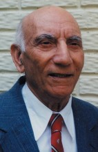

Please note: the AAS Obituaries are temporarily being hosted on this website while their full content is being ingested into the PubPub publishing platform newly adopted by the Bulletin of the American Astronomical Society. When the migration is complete, your existing links will take you to the final, migrated content. Contact peter.williams@aas.org with any questions.
Abolghassem Ghaffari (1907-2013)
Renowned scientist Dr. Abolghassem Ghaffari, who had taught at Harvard and Princeton Universities, passed away Tuesday night at 10:55pm in Los Angeles. He was 106 years old. In the early part of his career, he was Albert Einstein's colleague at the Institute for Advanced Study at Princeton University under the direction of J. Robert Oppenheimer. On October 12th, he was honored at Harvard University for his lifetime achievements.
Born in Tehran in 1907, he was educated at Darolfonoun School (Tehran). In 1929, he went to France and studied Mathematics and Physics at Nancy University, where he took his L-es-Sc. in Mathematics in 1932. After obtaining post-graduate diplomas in Physics, Astronomy, and Higher Analysis, he obtained in 1936 his doctorate from the Sorbonne (Doctor of Sciences with “Mention tres honorable”) for basic research on Mathematical Study of Brownian Motion.
Dr. Ghaffari lectured as a Research Associate at King’s College (London University), where he received his Ph.D. from the Mathematics Department on the “Velocity-Correction Factors and the Hodograph Method in Gas Dynamics.” As a Fulbright Scholar, he worked at Harvard University as a Research Associate to lecture on Differential Equations and to continue his research on Gas Dynamics.
He was a Research Associate in Mathematics at Princeton University, and at the Institute for Advanced Study, he worked in the early 1950s withAlbert Einstein on the Unified Field Theory of Gravitation and Electromagnetism. J. Robert Oppenheimer, who headed the U.S. atom bomb program during World War II, was director of the Institute at the time and interviewed Ghaffari before the latter became a member of the Institute (Oppenheimer later befriended Ghaffari).
He has lectured as a Professor of Mathematics at American University in Washington, DC and at Tehran University, where he joined the Faculty of Sciences and was appointed full Professor of Higher Analysis from 1941 to 1956.
In 1956, Ghaffari moved permanently to the U.S. to take up a position as a senior mathematician at theU.S. National Bureau of Standards. Part of his work there involved calculations of the motion of artificial satellites.
In 1964, three years into the manned space program, he joined, as aerospace scientist, the National Aeronautics and Space Administration (NASA) Goddard Space Flight Center, where he studied the mathematical aspects of different optimization techniques involved in the Earth-Moon trajectory problems, and different analytical methods for multiple midcourse maneuvers in interplanetary guidance. He later investigated the effects of solar radiation pressure on the Radio Astronomy Explorer Satellite Booms as well as the effects of General Relativity on the orbits of Artificial Earth Satellites.
He was awarded in Iran the Imperial Orders of the late Mohammad Reza Shah Pahlavi, and the U.S. Special Apollo Achievement award (1969) at a White House ceremony with President Nixon. He has published more than 50 papers on Pure and Applied Mathematics in American, British, and French, and Persian periodicals. In addition to two textbooks, he is author of the mathematical book “The Hodograph Method in Gas Dynamics” (1950).
In 2005, Ghaffari received the Distinguished Scholar award from the Association of Professors and Scholars of Iranian Heritage (APSIH) at UCLA. In 2007, he received a proclamation from former Beverly Hills mayor and current Goodwill Ambassador Jimmy Delshad acknowledging his numerous lifetime achievements. He also recently was appointed as a Hall of Fame inductee by SINA (Spirit of Noted Achievers) at Harvard University.
He is also a past member of the Iranian National Commission of UNESCO. Ghaffari is a Fellow of the New York Academy of Sciences, the Washington Academy of Sciences, and the American Association for the Advancement of Sciences and a member of the London Mathematical Society, the American Mathematical Society, The Mathematical Association of America, and the American Astronomical Society.
He is survived by his wife, Mitra, and his two daughters, Ida and Vida. He is interred at Pierce Brothers Valhalla Memorial Park in Burbank, California.
Obituary written by: unknown
BAAS Citation: BAAS, 2013, 45, 027